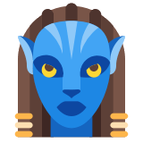
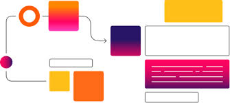
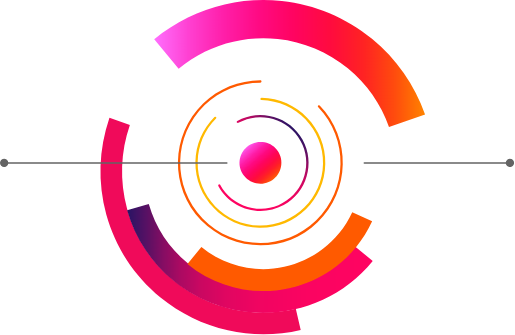
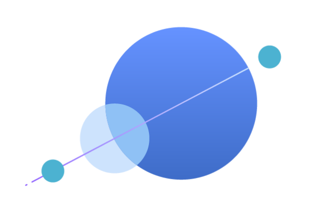
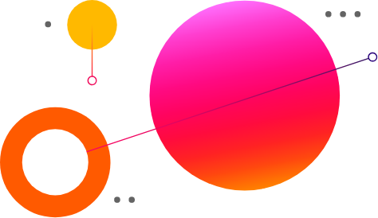
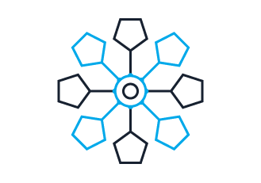

A continuación les mostraremos el trabajo de la asignatura de Medios tecnología y recursos para la intervención educativa, donde el contexto de intervención ha sido el educativo, centrándose en los centros escolares, que es donde se desarrolla la aplicación Classdojo, que presentaremos a continuación.
Apartados

Identificación de la experiencia
Voy a escoger el recurso educativo conocido por Classdojo, que se trata de una plataforma que permite a los docentes organizar su aula, promover actividades de gamificación, calificar al alumnado y mantener una comunicación más fluida con ellos y sus familias.
Más información

Fundamentación teórica
ClassDojo fue lanzado en agosto de 2011; desde agosto de 2012 la compañía ubicada en San Francisco, California, cuenta con más de 3,5 millones de maestros y estudiantes utilizando ClassDojo en más de 60 países. Inicialmente fundada por la incubadora de tecnología para la educación ubicada en Palo Alto ImagineK. ClassDojo obtuvo su capital de una serie de inversores incluyendo a Ron Conway, Mitch Kapor, Jeff Clavier, General Catalyst y Paul Graham.
Más información
Justificación del recurso tecnológico
Es importante tener en cuenta que los continuos cambios del mundo actual y la aparición de las nuevas Tecnologías de la Información y la Comunicación (TIC) han influido en la manera de aprender de los niños y, por lo tanto, es necesario hacer un cambio en la manera de enseñar.
Más información

Reflexión final
Tras el análisis podemos llegar a la conclusión de que la aplicación puede admitir mejoras y modificaciones para dar un mejor servicio, adaptado a las necesidades educativas que pretende cubrir.
Más información

Análisis de la herramienta web
Para el diseño de la página web usada para presentar el trabajo, se ha incorporado la mayor parte de las funcionalidades básicas web, además de elementos gráficos y multimedia como imágenes, videos, y gráficas.
Más información

Bibliografía y Webgrafía
Más información
